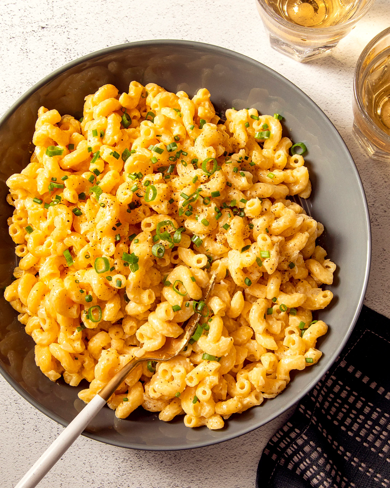

Home
Macaroni

Description
Macaroni is a classic type of pasta that originated in Italy, characterized by its short, curved tubular shape. It is made from durum wheat semolina, which gives it a firm texture and a slightly yellow hue. Macaroni is versatile and widely used in various dishes, from baked casseroles to soups, or simply served with sauce. Its small size and shape allow it to absorb flavors and hold onto sauces well, making it a favorite in many kitchens around the world.
The most popular dish featuring macaroni is macaroni and cheese, where the pasta is paired with a creamy, melted cheese sauce. This comfort food has become a staple in many homes, often enjoyed by both children and adults. However, macaroni is also commonly used in pasta salads, soups, and Italian-inspired casseroles, making it a beloved and adaptable ingredient in countless recipes. Whether it's part of a hearty meal or a simple side dish, macaroni continues to be a go-to pasta choice globally.
Ingredients
- 8 oz elbow macaroni (about 2 cups)
- 2 tablespoons butter
- 2 tablespoons all-purpose flour
- 2 cups milk (whole milk works best)
- 2 cups shredded cheddar cheese (or a mix of cheeses)
- Salt, to taste
- Black pepper, to taste
- Optional: garlic powder, mustard powder, or paprika for extra flavor
Steps
- Cook the macaroni: Boil a large pot of salted water, add the macaroni, and cook according to package instructions (usually 8-10 minutes). Drain and set aside.
- Make the cheese sauce: In a saucepan, melt 2 tablespoons of butter over medium heat. Add 2 tablespoons of flour and stir to form a roux, cooking for 1-2 minutes.
- Add milk: Slowly whisk in 2 cups of milk, ensuring no lumps form. Continue to cook until the mixture thickens (about 3-5 minutes).
- Stir in cheese: Add 2 cups of shredded cheddar cheese (or a mix of cheeses) to the sauce, stirring until melted and smooth.
- Combine with pasta: Add the drained macaroni to the cheese sauce, stirring until well-coated.
- Season: Taste and season with salt, pepper, and a pinch of garlic powder or mustard powder, if desired.
- Serve: Serve immediately, or for a baked version, transfer to a greased baking dish, top with extra cheese, and bake at 350°F (175°C) for 15-20 minutes until golden and bubbly. Enjoy!